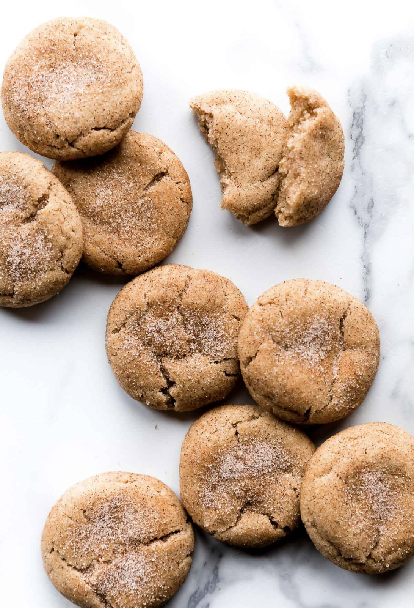

Soft & Thick Snickerdoodles

Description
These soft and thick snickerdoodles are sugar cookies coated in ground cinnamon and granulated sugar.
Ingredients
- 3 cups all-purpose flour
- 2 teaspoons cream of tartar
- 1 teaspoon baking soda
- 2 1/2 teaspoons ground cinnamon
- 1/2 teaspoon salt
- 1 cup unsalted butter
- 1 2/3 cup granulated sugar
- 1 egg
- 1 egg yolk
- 2 teaspoons pure vanilla extract